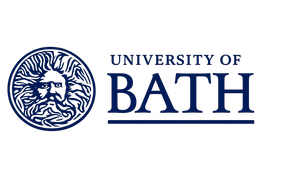
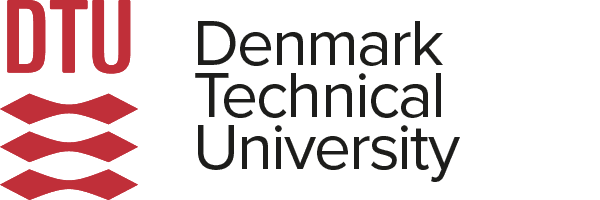

Doctor of Philosophy (PhD)
University of Bath
Topic: Power System Reliability
I am a PhD Student at the University of Bath, building on my previous MPhil from Royal Holloway, University of London. My research focuses on power systems, battery energy storage systems (BESS), and machine learning enabled decision support for energy system operations and planning.
I’m particularly interested in Power System Reliability, Optimal Power Flow (OPF/SCOPF), and Explainable AI (XAI) for intelligent contingency screening. My work combines data-driven learning with physically interpretable models to improve grid resilience, flexibility, and transparency.
This research supports UN Sustainable Development Goal 7: Affordable and Clean Energy, and the wider transition toward smarter, more efficient energy systems.
Alongside the research I work as a full stack developer across two part-time roles, building agentic AI solutions and web applications. Earlier, as Technical Lead for Machine Learning at HCL Technologies, I took ML features into production products.

Bilal Ahmad


Power systems research, applied machine learning, and the software that connects the two.
Modelling and optimising distribution networks reliability and uncertainty.
What I work on
Libraries and solvers
Designing domain-specific models, from PS optimisation to production features.
What I work on
Libraries
Building the tooling around the research, and the software infrastructure to deploy it.
What I work on
Languages
Fellowships
Award
Third Best Paper icSmartGrid 2025 — Glasgow, UK
Projects